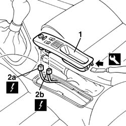

7040L28 tunnel switch panel - r r
- Path
- Procedures > 70 FITTINGS > 7040 BODYSHELL INTERIOR TRIMS AND FITTINGS > 7040L cabin floor covering > 7040L28 tunnel switch panel - r r
- Kind
- repair procedure (removal / refitting; the operation number is the code)
- Applies to
- all engines; all production periods
- Interactive page
- https://sloeber94.github.io/elrnDB-a156/en/#/3238851
Applies to: all engines; all production periods
 Removing
Removing
 Refitting
Refitting1. Remove the collar badge with the proper tool. Operate on the indicated side.
 | Name | Country |
|---|---|---|
1 | Scraper blade | 1.823.014.000 |
2. Displace only a little the collar badge and disconnect the electrical connections (2a, 2b).
 | Name | Connector |
|---|---|---|
2a | Adjustable mirror control |
| Name | Connector |
|---|---|---|
2b | Switches assembly on central console |

Applies to: all engines; all production periods
Refitting
RemovingMake sure that the collar badge is not damaged and that the anchor fins be complete.
Connect the electrical connections.
Install the collar badge.
Check the operation of the electrical controls.
Topics linked from this page (2)
Topics that link to this page (24)
- 2127A12 hand lever of manual gearbox with hydraulic selection - r r
- 2127A70 support for control levers for manual gearbox with hydraulic selection and handbrake - r r
- 5010B24 under-facia air ducts r r
- 5010B46 central air duct to rear seat - arrange
- 5010B47 side air duct to rear seat(one), lh or rh - r r
- 5020A10 heater box - r+r
- 5020B10 heater control support - r+r
- 5020B28 air conditioner symbol light bulb/s - includes control panel r+r
- 5020B31 air distribution flap control cable(one) - r r
- 5020B42 air mixer flap control cable - r+r
- 5020B80 heater system wiring bundle - r r or replace
- 5040C10 air conditioner box - r+r
- 5505A26 bonnet wiring - r r
- 5505C31 under-facia wiring - r r
- 5505C41 cabin wiring - r r
- 5540D18 fog lamp switch - r+r
- 5540E18 rear fog lamp switch - r r
- 5580C86 side bag wiring harness (one) lh or rh - r r or replace
- 7005R40 rear view mirror-s and door mirror-s positioning switch unit - r r
- 7040A10 instrument facia trim - r+r
- 7040A97 facia trim support beam - r r
- 7040L10 cabin floor carpet - r r
- 7040L20 tunnel trim - r r
- 7065A80 pre-tensioner wiring - r r